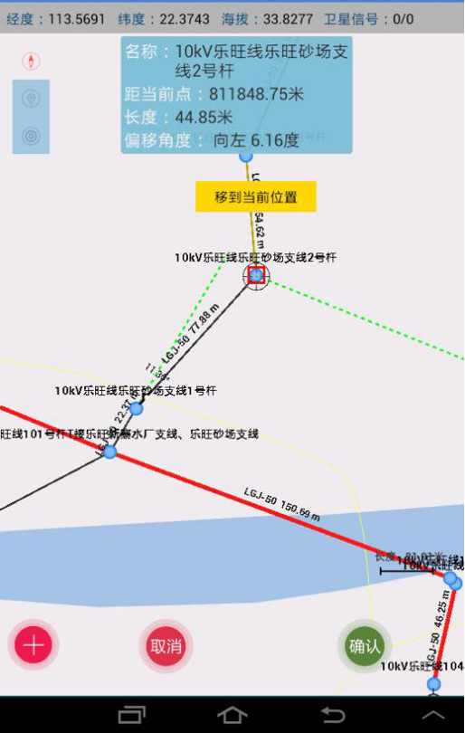
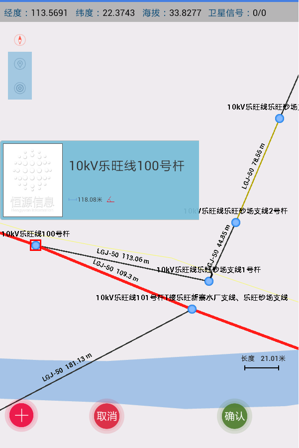
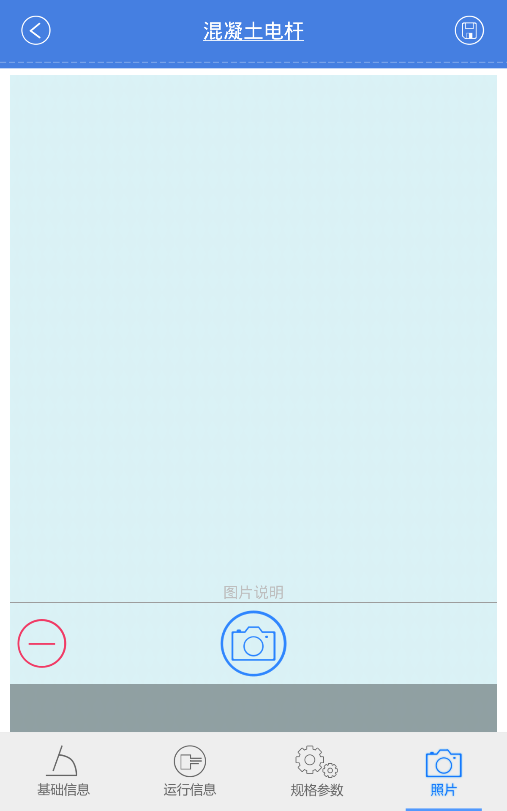

供电局工程资料电子化移交移动
发表日期：2019-04-10 文章编辑：成功案例
项目背景
本项目工程资料电子化移交动应用服务于一体化GIS平台、与生产管理系统，生产管理系统，为电子化移交业务补充现场的线路建模、台账更新应用，需要与一体化
GIS平台、生产管理系统形成数据、业务的集成应用。主要分为存量数据同步与增量数据更新两部分，存量数据，存量数据为从一体化GIS平台内获取电子化移交工单数据、
馈线拓扑连接关系、设备连接关系、设备坐标；从生产管理系统内获取电子化移交工单数据、台账数据（功能位置、设备基本参数、基本参数、设备技术参数）。增量数据为向一体化GIS平台提供的现场所采集的馈线拓扑连接关系、设备坐标的增量数据；向生产管理系统提供的现场所采集台账数据（功能位置、生产管理系统提供的现场所采集台账数据（功能位置、
设备基本参数、设备技术参数）的增量数据。
项目目标
电子化移交为企业管理信息化提供数据，是电网公司管理信息化的基础。通过本项目实现针对电子化移交业务工作模式的移动化应用研究及建设，形成以移动应用为核心，在工程现场完成线路建模、台账录入、数据格式检查等现场作业，实现与一体化GIS平台、安全生产管理系统的对接，提高工程资料电子化移交增量数据质量，数据采集更新维护工作效率。
项目架构

项目功能
工程资料电子化移交移动应用包括以下集成功能：
1)、设备数据采集功能：自建工单、坐标采集、台账采集、拓扑生成；
2)、照片管理功能：照片拍摄、照片浏览、设备映射；
3)、数据同步功能：在线方式、离线方式；
4)、增量分析功能：图形增量分析、台账增量分析；
5)、质量检查功能：合规性检查、合理性检查；
6)、数据交互功能：终端数据同步、业务数据同步、存量拓扑数据分析处理；
7)、集成接口：电子化移交工单接口、GIS存量数据获取接口、GIS增量数据更新接口、台账数据存量接口、台账数据增量接口、基础数据接口、服务代理接口、用户授权接口。
1)、设备数据采集功能：自建工单、坐标采集、台账采集、拓扑生成；
2)、照片管理功能：照片拍摄、照片浏览、设备映射；
3)、数据同步功能：在线方式、离线方式；
4)、增量分析功能：图形增量分析、台账增量分析；
5)、质量检查功能：合规性检查、合理性检查；
6)、数据交互功能：终端数据同步、业务数据同步、存量拓扑数据分析处理；
7)、集成接口：电子化移交工单接口、GIS存量数据获取接口、GIS增量数据更新接口、台账数据存量接口、台账数据增量接口、基础数据接口、服务代理接口、用户授权接口。
项目图片


